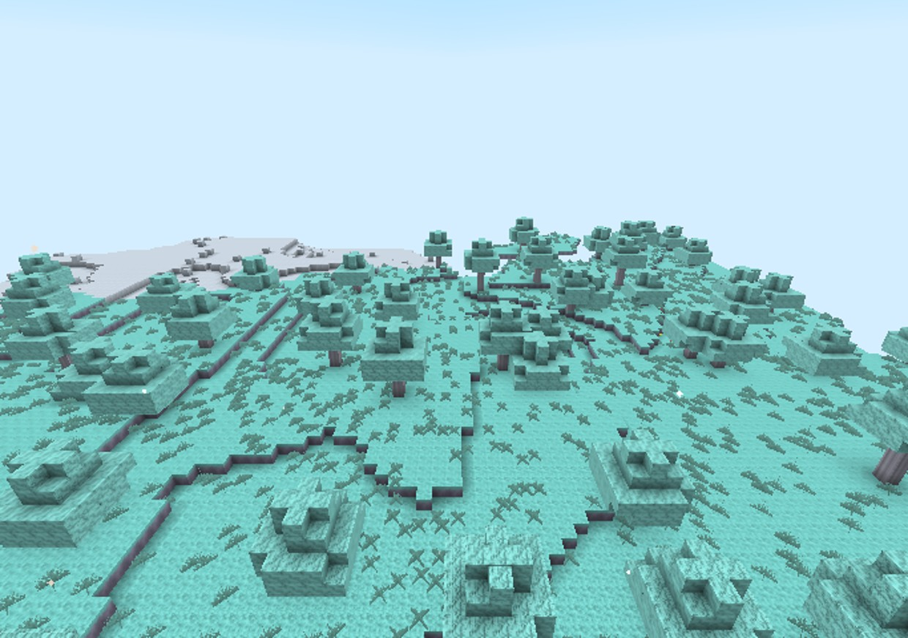
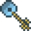
Ce manuel est généré à partir des données du mod : chaque valeur (dégâts, mana, niveau requis, recette…) est celle du jeu. Les captures ont été prises automatiquement dans Minecraft 1.21.11.
Il y a très longtemps, une civilisation de bâtisseurs, les Anciens Architectes, découvrit sept mondes au-delà du ciel, de la mer et de la pierre. Elle les relia au nôtre par des portails. Puis une faim s'éveilla entre les mondes : le Dévoreur de Mondes. Pour l'affamer, les Architectes brisèrent leurs portails. Ce fut le Grand Effondrement. Les fragments de leur pouvoir se dispersèrent dans la terre, et les gardiens des sept mondes sombrèrent dans la corruption.
Vous retrouverez cette histoire morceau par morceau, en lisant les Terminaux runiques (clic droit) dispersés dans les ruines, en traversant les portails et en affrontant les gardiens.
Les chapitres 1 à 3 et 6 sont jouables. Les gardiens, les boss, les structures, les quêtes et les PNJ arrivent dans les prochaines versions.
Téléchargez le JDK 21 sur adoptium.net (Windows/macOS) ou
sudo apt install openjdk-21-jdk (Linux). Le launcher officiel embarque déjà Java pour jouer : cette étape ne
sert qu'à compiler le mod vous-même.
Lancez l'installateur de fabricmc.net, choisissez Minecraft 1.21.11 et Fabric Loader 0.20.1 (ou plus récent), puis « Installer ».
Placez forgotten_dimensions-0.1.0.jar et
fabric-api-0.141.6+1.21.11.jar dans le dossier mods :
Windows %appdata%\.minecraft\mods ·
macOS ~/Library/Application Support/minecraft/mods · Linux ~/.minecraft/mods.
Choisissez le profil fabric-loader-1.21.11 dans le launcher.
Installez le serveur Fabric 1.21.11 (fabricmc.net/use/server), lancez-le une fois, passez eula=true dans
eula.txt, puis copiez le mod et Fabric API dans mods/. Chaque joueur doit avoir les mêmes
fichiers. Le serveur fait autorité : sorts, mana, expérience et compétences sont validés par lui, et la progression est
sauvegardée avec chaque joueur.
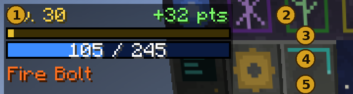
| Touche | Action |
|---|---|
| R | Lancer le sort actif |
| G | Sort débloqué suivant |
| K | Arbre de compétences |
| B | Livre de magie |
Modifiables dans Options → Commandes → « Dimensions Oubliées ».
Tout commence sous vos pieds. Des fragments de la technologie des Architectes et des sept mondes se cachent dans la roche de la Surface. Une pioche en fer suffit pour les miner.
| Minerai | Où le trouver | Donne | |
|---|---|---|---|
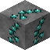 | Minerai de fragment ancien | Y −48 à 48 (pierre et ardoise des abîmes) | 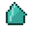 Fragment ancien |
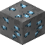 | Minerai — fragment céleste | Y −64 à 16, plus rare | 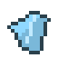 Fragment céleste |
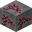 | Minerai — fragment corrompu | Y −64 à 16, plus rare | 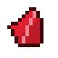 Fragment corrompu |
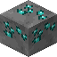 | Minerai — fragment océanique | Y −64 à 16, plus rare | 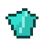 Fragment océanique |
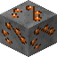 | Minerai — fragment du chaos | Y −64 à 16, plus rare | Fragment du chaos |
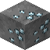 | Minerai — fragment éternel | Y −64 à 16, plus rare | Fragment éternel |
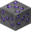 | Minerai — fragment des profondeurs | Y −64 à 16, plus rare | 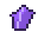 Fragment des profondeurs |
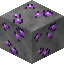 | Minerai — fragment du néant | Y −64 à 16, plus rare | 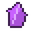 Fragment du néant |
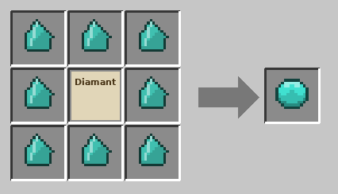
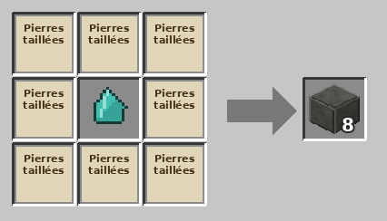
Le Noyau d'Architecte (8 fragments anciens autour d'un diamant) est la pièce maîtresse du portail et des clés.
Les portails des Architectes peuvent être rallumés. Il vous faut un Portail dimensionnel et la clé de la dimension voulue. Voici le chemin complet, étape par étape.
8 fragments anciens pour le noyau d'Architecte, et 8 fragments de la dimension visée (par exemple 8 fragments célestes pour le Royaume Céleste). Voir « Premiers pas ».
Il en faut un pour le portail et un par clé.
Pierre d'Architecte (8 pierres taillées autour d'un fragment ancien), obsidienne pleureuse et noyau d'Architecte. Il se pose comme un bloc ordinaire, où vous voulez.
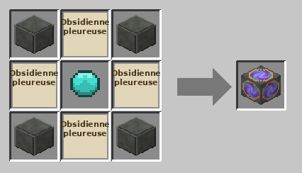
8 fragments de la dimension autour d'un noyau d'Architecte. La clé n'est jamais consommée : elle sert pour tous vos voyages.
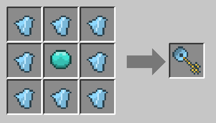
Tenez la clé et faites un clic droit sur le portail.
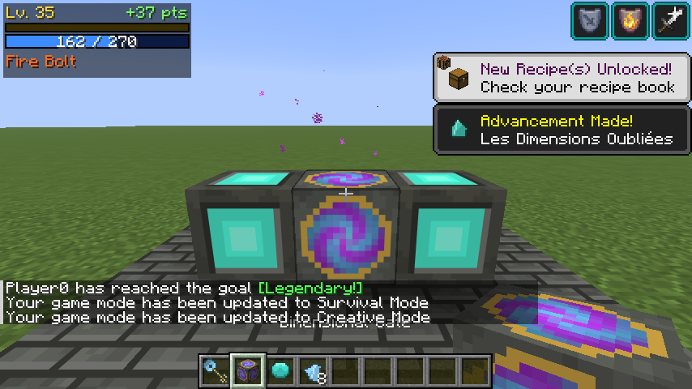
Vous arrivez sur un sol sûr (jamais dans un mur, dans la lave ou dans l'eau). Si aucun sol n'est trouvé, une plateforme est construite : à la surface de l'eau dans l'Océan Oublié, dans les airs dans le Royaume Céleste. Le nom de la dimension s'affiche.
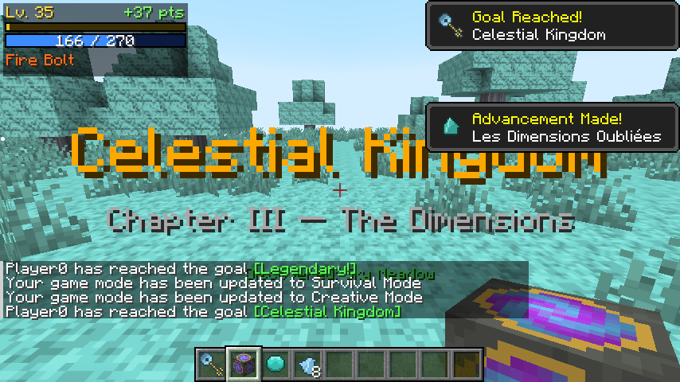
Un portail de retour apparaît à côté du point d'arrivée. Clic droit à main vide dessus : vous revenez exactement là où vous étiez parti.
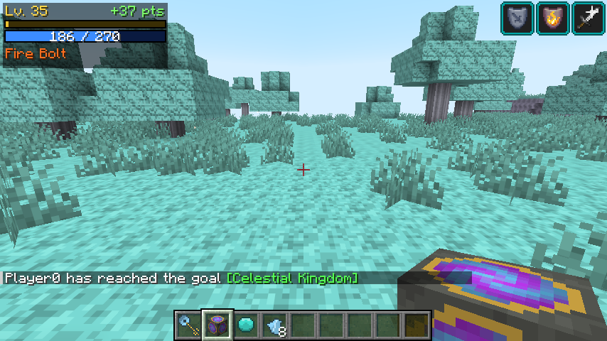
| Clé | Recette | |
|---|---|---|
| Clé — Royaume Céleste | 8 × Fragment céleste + noyau d'Architecte | |
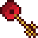 | Clé — Dimension Corrompue | 8 × Fragment corrompu + noyau d'Architecte |
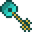 | Clé — Océan Oublié | 8 × Fragment océanique + noyau d'Architecte |
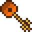 | Clé — Terres du Chaos | 8 × Fragment du chaos + noyau d'Architecte |
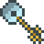 | Clé — Monde Éternel | 8 × Fragment éternel + noyau d'Architecte |
| Clé — Les Profondeurs | 8 × Fragment des profondeurs + noyau d'Architecte | |
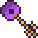 | Clé — Le Néant | 6 cœurs des gardiens + fragment du néant + étoile du Nether |
La clé du Néant exige les six cœurs des gardiens, lâchés par les gardiens dimensionnels (prochaine version). Le Néant est donc la dernière étape de l'aventure. En attendant, un opérateur peut utiliser /fdimension tp void.
Dans le Royaume Céleste et le Néant, tomber sous le monde ne tue pas : le portail ancien vous ramène à votre point de départ.
/fdimension tp <dimension> fait le même voyage sans clé, et /fdimension home ramène au point de départ.
Chaque dimension a son terrain, cinq biomes, ses trois matériaux, ses créatures et son ambiance. Elles sont présentées dans l'ordre conseillé : la difficulté (vie et dégâts des créatures) augmente de l'une à l'autre.
| Dimension | Difficulté | Danger principal | |
|---|---|---|---|
| Royaume Céleste | ★ | le vide | |
| Dimension Corrompue | ★★ | les meutes | |
| Océan Oublié | ★★★ | la noyade | |
| Terres du Chaos | ★★★★ | la lave et le feu | |
| Monde Éternel | ★★★★★ | le gel | |
| Les Profondeurs | ★★★★★★ | l'obscurité | |
| Le Néant | ★★★★★★★ | le vide et les élites |
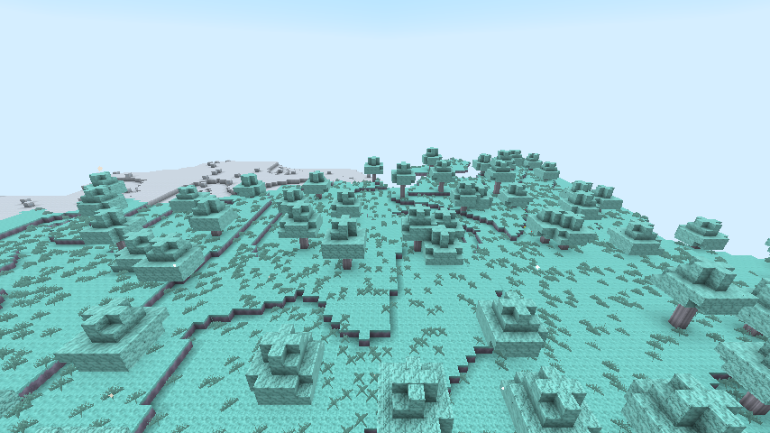
Des îles flottantes suspendues au-dessus d'un océan de nuages. Prairies turquoise, forêts de bois des nuages, jardins d'étoiles et ruines suspendues. Attention au vide : sans le portail ancien, la chute serait mortelle.
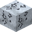
Argent astral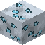
Cristal céleste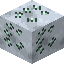
Pierre des ventsPierre de la dimension : Pierre des nuages (et sa variante profonde, qui contient les minerais profonds).
Clé — Royaume Céleste
Ciel, brouillard, lumière et particules propres à chaque biome.
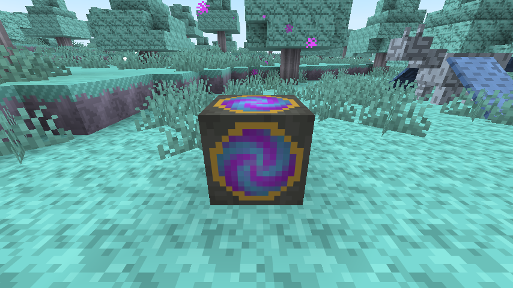
| Créature | Catégorie | Vie | Dégâts | Capacités |
|---|---|---|---|---|
| Aigle céleste | Neutre | 24 | 5.0 | bond |
| Gardien des nuages | Hostile | 50 | 8.0 | charge |
| Serpent aérien | Hostile | 30 | 6.0 | projectile de foudre |
| Esprit lumineux | Passive | 12 | 0.0 | se soigne |
| Dragon des cieux | Élite | 110 | 11.0 | projectile de foudre, foudre, invoque des sbires |
| Sylphe du vent | Passive | 8 | 0.0 | — |
| Bélier des nuages | Passive | 16 | 0.0 | — |
| Héraut de la tempête | Mini-boss | 180 | 14.0 | foudre, projectile de foudre, téléportation, invoque des sbires |
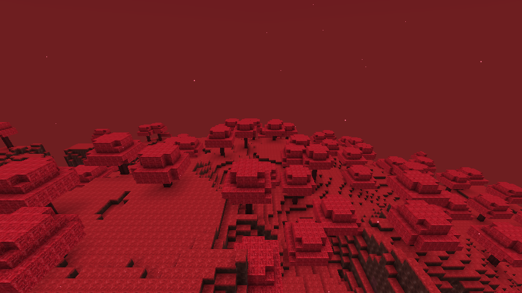
Une terre infectée par une énergie rouge. Ciel écarlate, mers de sang, forêts de racine pourpre et déserts de cendres rouges. Les créatures y chassent en meute.
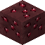
Corruptium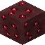
Rubis de sang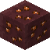
Ambre corrompuPierre de la dimension : Pierre corrompue (et sa variante profonde, qui contient les minerais profonds).
Clé — Dimension Corrompue
Ciel, brouillard, lumière et particules propres à chaque biome.
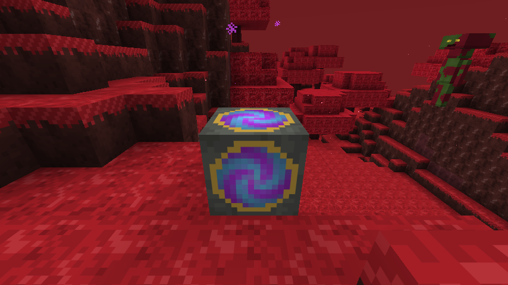
| Créature | Catégorie | Vie | Dégâts | Capacités |
|---|---|---|---|---|
| Zombie corrompu | Hostile | 30 | 5.6 | coups flétrissants |
| Loup mutant | Hostile | 25 | 6.7 | bond |
| Araignée écarlate | Hostile | 23 | 4.5 | coups empoisonnés, bond |
| Golem infecté | Élite | 138 | 13.4 | aura de poison, charge |
| Entité végétale | Hostile | 34 | 5.6 | racines, projectile de nature |
| Rampant corrompu | Hostile | 21 | 4.5 | coups empoisonnés |
| Sanglier corrompu | Neutre | 32 | 6.7 | charge |
| Spectre putride | Hostile | 23 | 5.6 | projectile du néant, aura de flétrissement |
| Chevalier corrompu | Mini-boss | 230 | 16.8 | coups flétrissants, charge, invoque des sbires, se soigne |
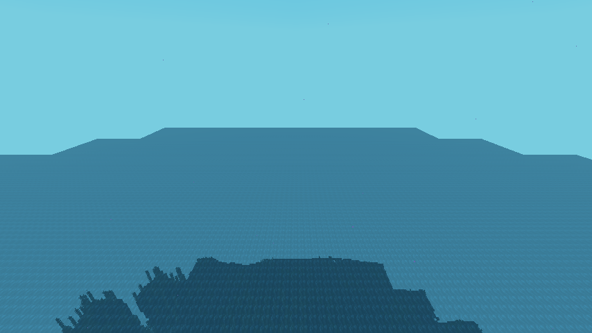
Un monde presque entièrement englouti : la mer monte jusqu'à la hauteur 150. Récifs lumineux, forêts de corail, abysses et tranchées obscures. La respiration aquatique est offerte à l'arrivée ; une amulette abyssale ou l'armure du plongeur de perles est vivement conseillée.
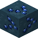
Cobalt des marées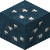
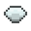
Perle abyssale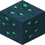
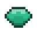
Jade marinPierre de la dimension : Pierre abyssale (et sa variante profonde, qui contient les minerais profonds).
Clé — Océan Oublié
Ciel, brouillard, lumière et particules propres à chaque biome.
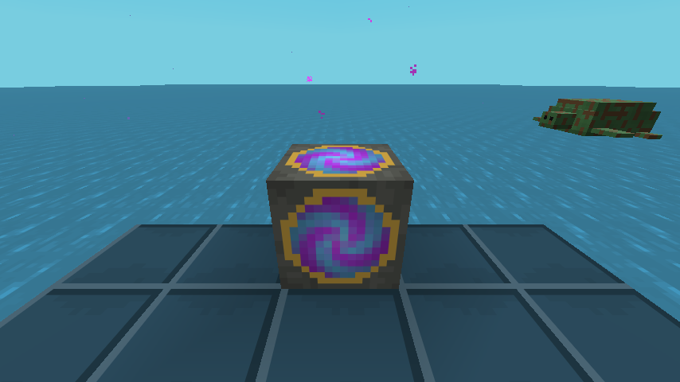
| Créature | Catégorie | Vie | Dégâts | Capacités |
|---|---|---|---|---|
| Léviathan | Élite | 182 | 16.0 | charge, invoque des sbires |
| Requin spectral | Hostile | 39 | 8.6 | charge |
| Méduse lumineuse | Passive | 13 | 0.0 | aura de poison |
| Gardien abyssal | Hostile | 44 | 7.4 | projectile de glace |
| Tortue ancienne | Passive | 52 | 0.0 | — |
| Crabe du récif | Passive | 16 | 2.5 | — |
| Baudroie des abysses | Hostile | 34 | 8.6 | coups aveuglants, traque invisible |
| Architecte noyé | Hostile | 42 | 7.4 | projectile de glace, téléportation |
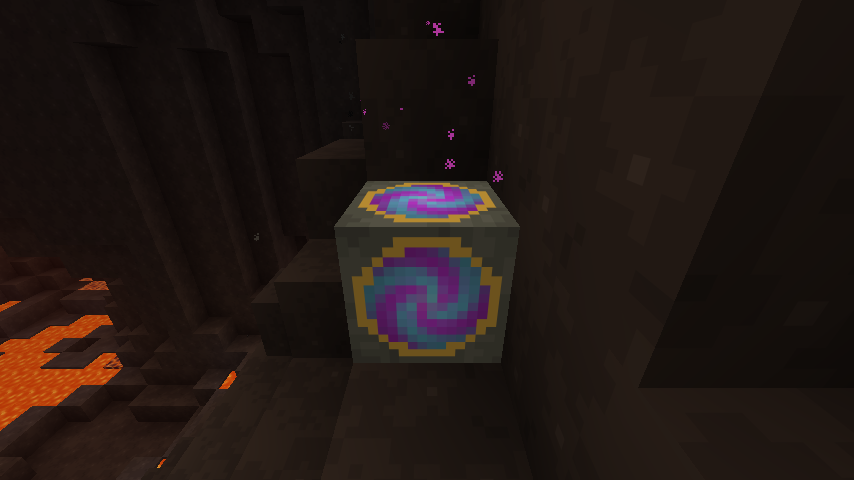
Un monde volcanique sous un plafond de roche, avec un océan de lave. Forêts de braises, colonnes de basalte, déserts de magma et citadelle du chaos. Une résistance au feu est presque indispensable.
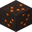
Magmatite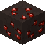
Grenat de braise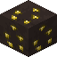
Soufre infernalPierre de la dimension : Pierre de cendre (et sa variante profonde, qui contient les minerais profonds).
Clé — Terres du Chaos
Ciel, brouillard, lumière et particules propres à chaque biome.
| Créature | Catégorie | Vie | Dégâts | Capacités |
|---|---|---|---|---|
| Salamandre de feu | Hostile | 39 | 8.3 | coups enflammés, bond |
| Démon de magma | Hostile | 51 | 9.7 | projectile de feu, nova de feu |
| Golem volcanique | Élite | 195 | 18.0 | nova de feu, charge |
| Dragon de lave | Élite | 180 | 18.0 | projectile de feu, nova de feu, invoque des sbires |
| Chevalier des braises | Hostile | 57 | 11.1 | coups enflammés, charge |
| Diablotin de cendre | Hostile | 21 | 5.5 | projectile de feu |
| Molosse de cendre | Hostile | 42 | 9.7 | coups enflammés, bond |
| Limace de lave | Passive | 21 | 0.0 | — |
| Colosse infernal | Mini-boss | 345 | 23.5 | nova de feu, charge, invoque des sbires, projectile de feu |
Un royaume gelé où le temps semble arrêté : glaciers, pics de glace, lacs gelés et forêts de pins de givre. Le gel ralentit ; les armures de glace éternelle y rendent insensible.
Pierre de la dimension : Roche de givre (et sa variante profonde, qui contient les minerais profonds).
Clé — Monde Éternel
Ciel, brouillard, lumière et particules propres à chaque biome.
| Créature | Catégorie | Vie | Dégâts | Capacités |
|---|---|---|---|---|
| Loup fantôme | Hostile | 48 | 10.7 | coups gelants, bond |
| Géant de glace | Élite | 238 | 21.4 | souffle glacé, charge, aura de lenteur |
| Esprit hivernal | Hostile | 37 | 7.6 | projectile de glace, aura de lenteur |
| Ours ancien | Neutre | 85 | 13.8 | charge |
| Chevalier du gel | Hostile | 68 | 13.8 | coups gelants, souffle glacé |
| Lièvre des neiges | Passive | 10 | 0.0 | — |
| Feu follet de givre | Passive | 14 | 0.0 | — |
| Wyrm glaciaire | Mini-boss | 374 | 24.5 | souffle glacé, charge, invoque des sbires, aura de lenteur |
Un immense réseau de cavernes sous un plafond de roche : cavernes cristallines, forêts de champignons géants, abysses souterrains et ruines enfouies. Les ombres prédatrices y chassent invisibles.
Pierre de la dimension : Roche ombrale (et sa variante profonde, qui contient les minerais profonds).
Clé — Les Profondeurs
Ciel, brouillard, lumière et particules propres à chaque biome.
| Créature | Catégorie | Vie | Dégâts | Capacités |
|---|---|---|---|---|
| Araignée colossale | Élite | 247 | 21.7 | coups empoisonnés, bond, invoque des sbires |
| Ver des profondeurs | Hostile | 65 | 11.7 | charge, coups empoisonnés |
| Gardien aveugle | Hostile | 114 | 16.7 | aura de fatigue, charge |
| Champignon vivant | Neutre | 38 | 6.7 | aura de poison |
| Ombre prédatrice | Hostile | 61 | 15.0 | traque invisible, bond, coups aveuglants |
| Chauve-souris lugubre | Hostile | 27 | 6.7 | coups aveuglants |
| Scarabée de cristal | Passive | 27 | 3.3 | — |
| Taupe des galeries | Passive | 23 | 0.0 | — |
| Traqueur ombral | Mini-boss | 399 | 26.7 | traque invisible, téléportation, projectile du néant, invoque des sbires |
Une dimension cosmique hors de la réalité : une île centrale entourée d'îles stellaires dans le vide. Désert du vide, océan astral, ruines dimensionnelles. C'est ici qu'attend le Dévoreur de Mondes.
Pierre de la dimension : Pierre du néant (et sa variante profonde, qui contient les minerais profonds).
Clé — Le Néant
Ciel, brouillard, lumière et particules propres à chaque biome.
| Créature | Catégorie | Vie | Dégâts | Capacités |
|---|---|---|---|---|
| Spectre cosmique | Hostile | 62 | 13.2 | projectile du néant, téléportation |
| Dragon astral | Élite | 330 | 28.2 | projectile du néant, téléportation, invoque des sbires |
| Entité du vide | Hostile | 79 | 16.9 | téléportation, coups flétrissants |
| Gardien dimensionnel | Élite | 330 | 28.2 | projectile du néant, aura de lenteur, charge |
| Fragment vivant | Hostile | 44 | 11.3 | explose à sa mort, projectile du néant |
| Méduse stellaire | Passive | 26 | 0.0 | — |
| Marcheur du néant | Hostile | 88 | 18.8 | téléportation, projectile du néant |
| Raie nébuleuse | Passive | 35 | 0.0 | — |
| Horreur de la faille | Mini-boss | 528 | 33.8 | téléportation, projectile du néant, invoque des sbires, aura de flétrissement |
Votre personnage progresse du niveau 1 au niveau 100. Chaque niveau donne 1 point de compétence, plus 1 point bonus tous les 10 niveaux (109 points au total).
| Niveau | XP pour le suivant | XP cumulée | Points cumulés |
|---|---|---|---|
| 1 | 53 | 0 | 0 |
| 5 | 115 | 298 | 4 |
| 10 | 220 | 1 071 | 10 |
| 20 | 520 | 4 522 | 21 |
| 30 | 940 | 11 513 | 32 |
| 40 | 1 480 | 23 244 | 43 |
| 50 | 2 140 | 40 915 | 54 |
| 60 | 2 920 | 65 726 | 65 |
| 70 | 3 820 | 98 877 | 76 |
| 80 | 4 840 | 141 568 | 87 |
| 90 | 5 980 | 194 999 | 98 |
| 99 | 7 109 | 253 261 | 107 |
Chaque compétence se monte rang par rang (1 point par rang). Certaines exigent un niveau minimum et une compétence
préalable. Un opérateur peut rembourser tous les points avec /fdimension skills reset.
| Compétence | Rangs | Niveau | Prérequis | Effet |
|---|---|---|---|---|
| Force | 3 | 1 | — | +1 dégât d'attaque par rang. |
| Vigueur | 3 | 1 | — | +2 points de vie max par rang. |
| Peau de fer | 3 | 5 | Vigueur | +1 armure par rang. |
| Coup tournoyant | 3 | 10 | Force | Les coups infligent 15 % de leurs dégâts aux ennemis proches par rang. |
| Rage | 2 | 20 | Coup tournoyant | Sous 30 % de vie, gagnez Force. |
| Second souffle | 2 | 25 | Peau de fer | Tuer un ennemi soigne 2 points de vie par rang. |
| Compétence | Rangs | Niveau | Prérequis | Effet |
|---|---|---|---|---|
| Réserve arcanique | 3 | 1 | — | +20 mana max par rang. |
| Flux de mana | 3 | 1 | — | +20 % de régénération de mana par rang. |
| Concentration | 3 | 8 | Réserve arcanique | -8 % de coût en mana par rang. |
| Maîtrise des sorts | 3 | 12 | Flux de mana | +10 % de puissance des sorts par rang. |
| Célérité | 3 | 18 | Concentration | -8 % de temps de recharge par rang. |
| Bouclier de mana | 2 | 25 | Maîtrise des sorts | 10 % des dégâts subis par rang sont absorbés par le mana. |
| Compétence | Rangs | Niveau | Prérequis | Effet |
|---|---|---|---|---|
| Œil de faucon | 3 | 1 | — | +10 % de dégâts des flèches par rang. |
| Pas léger | 3 | 1 | — | +3 % de vitesse par rang. |
| Tireur d'élite | 3 | 10 | Œil de faucon | +5 % de dégâts des flèches par rang tous les 10 blocs de distance. |
| Chasseur | 3 | 12 | Pas léger | +5 % de dégâts contre les créatures par rang. |
| Esquive | 3 | 20 | Chasseur | 4 % de chance par rang d'esquiver une attaque. |
| Tir perforant | 2 | 25 | Tireur d'élite | Les flèches infligent jusqu'à +15 % par rang aux cibles en armure. |
| Compétence | Rangs | Niveau | Prérequis | Effet |
|---|---|---|---|---|
| Endurance | 3 | 1 | — | +1,5 bloc de chute sans dégâts par rang. |
| Pied agile | 2 | 1 | — | Franchissez des marches plus hautes. |
| Prospecteur | 3 | 8 | Endurance | +2 d'efficacité de minage par rang. |
| Cartographe | 3 | 10 | Pied agile | +15 % d'expérience d'exploration par rang. |
| Poumons profonds | 3 | 15 | Prospecteur | +1 bonus d'oxygène par rang. |
| Vision des ténèbres | 1 | 20 | Cartographe | Vision nocturne dans les profondeurs. |
| Compétence | Rangs | Niveau | Prérequis | Effet |
|---|---|---|---|---|
| Lien spirituel | 3 | 1 | — | Les invocations gagnent +10 points de vie max par rang. |
| Appel de la meute | 1 | 8 | — | Débloque le sort Invocation des loups. |
| Chef de meute | 2 | 12 | Appel de la meute | +1 loup invoqué par rang. |
| Lien durable | 3 | 10 | Lien spirituel | +20 % de durée des invocations par rang. |
| Gardien de pierre | 1 | 25 | Chef de meute | Débloque le sort Gardien de pierre. |
| Lien d'âme | 2 | 20 | Lien durable | Quand une invocation tue, vous récupérez 2 points de vie par rang. |
| Spécialisation | Effet |
|---|---|
| Guerrier | Spécialisation : +10 % de dégâts d'attaque. |
| Mage | Spécialisation : +25 % de mana max, +10 % de puissance des sorts. |
| Archer | Spécialisation : +15 % de dégâts des flèches, +5 % de vitesse. |
| Explorateur | Spécialisation : +10 % de vitesse, +20 % d'expérience d'exploration. |
| Invocateur | Spécialisation : invocations 50 % plus longues, +1 loup. |
Une seule spécialisation par personnage, choisie dans l'arbre de compétences.
| Succès | Comment l'obtenir |
|---|---|
| Les Dimensions Oubliées | Trouvez un fragment des Anciens Architectes. |
| Première incantation | Lancez votre premier sort. |
| Apprenti | Atteignez le niveau 10. |
| Aventurier | Atteignez le niveau 25. |
| Héros | Atteignez le niveau 50. |
| Champion | Atteignez le niveau 75. |
| Légende des Sept Mondes | Atteignez le niveau 100. |
| Adepte | Dépensez 10 points de compétence. |
| Une voie choisie | Choisissez une spécialisation. |
| À travers le portail | Voyagez par un Portail dimensionnel. |
| Chasseur de reliques | Obtenez un artefact. |
| Légendaire ! | Forgez une arme légendaire. |
| Sept essences | Forgez l'Alliage primordial. |
| Couronne des Sept Mondes | Obtenez l'artefact ultime. |
| Royaume Céleste | Rejoindre : Royaume Céleste. |
| Dimension Corrompue | Rejoindre : Dimension Corrompue. |
| Océan Oublié | Rejoindre : Océan Oublié. |
| Terres du Chaos | Rejoindre : Terres du Chaos. |
| Monde Éternel | Rejoindre : Monde Éternel. |
| Les Profondeurs | Rejoindre : Les Profondeurs. |
| Le Néant | Rejoindre : Le Néant. |
Cinq écoles de magie, dix sorts chacune. Choisissez le sort actif dans le Livre de magie (touche B) ou avec G, puis lancez-le avec R.
100 points au départ, +5 par niveau, +20 par rang de Réserve arcanique, +25 % avec la spécialisation Mage, plus les artefacts (Prisme de mana +50, Couronne des Sept Mondes +100). La régénération augmente avec le niveau, le Flux de mana, le Cœur des Anciens, l'ensemble de l'Architecte et les Blocs de ligne tellurique (×2 tant que vous êtes dessus). Un Bloc de cristal de mana rend 30 points au clic droit (toutes les 30 secondes).
La puissance d'un sort augmente de 1 % par niveau, de 10 % par rang de Maîtrise des sorts, de 10 % avec la spécialisation Mage, et de 3 % par point de maîtrise de l'école. La maîtrise (de 0 à 10) grandit avec le nombre de sorts lancés dans l'école ; l'Autel des sorts l'affiche au clic droit.
Effets des écoles : le feu enflamme, la glace ralentit et gèle, la foudre inflige +50 % aux cibles mouillées, la nature empoisonne, le néant flétrit. Les sorts offensifs épargnent les autres joueurs, vos animaux et vos invocations (réglable).
| Sort | Requis | Mana | Recharge | Puissance | Effet |
|---|---|---|---|---|---|
| Trait de feu | Niv. 1 | 10 | 0.75 s | 5 | Un projectile rapide qui enflamme la cible. |
| Embrasement | Niv. 3 | 12 | 2 s | 4 | Un rayon qui enflamme durablement la cible. |
| Boule de feu | Niv. 6 | 20 | 2 s | 7 | Un projectile qui explose à l'impact. |
| Mur de flammes | Niv. 10 | 30 | 10 s | 3 | Un cercle de feu qui brûle les ennemis qui s'y trouvent. |
| Nova de feu | Niv. 15 | 30 | 8 s | 8 | Une déflagration de flammes autour de vous. |
| Bénédiction du phénix | Niv. 20 | 35 | 30 s | — | Résistance au feu et régénération. |
| Explosion volcanique | Niv. 25 | 40 | 10 s | 12 | Le sol entre en éruption et projette les ennemis en l'air. |
| Météore | Niv. 40 | 60 | 20 s | 22 | Fait tomber un météore sur la zone visée. |
| Fournaise | Niv. 50 | 70 | 30 s | 5 | Un brasier vous suit et brûle les ennemis proches. |
| Frappe solaire | Niv. 70 | 100 | 45 s | 40 | Un rayon solaire dévastateur après un court délai. |
| Sort | Requis | Mana | Recharge | Puissance | Effet |
|---|---|---|---|---|---|
| Éclat de glace | Niv. 1 | 10 | 0.75 s | 5 | Un éclat qui ralentit la cible. |
| Garde de givre | Niv. 6 | 20 | 30 s | — | Résistance pendant un moment. |
| Lance de glace | Niv. 8 | 18 | 2 s | 8 | Un rayon de glace perçant qui ralentit fortement. |
| Prison glaciale | Niv. 12 | 25 | 10 s | 4 | Immobilise la cible dans la glace. |
| Nova de givre | Niv. 15 | 30 | 8 s | 7 | Une vague de froid autour de vous. |
| Armure de glace | Niv. 18 | 30 | 30 s | — | Forte résistance et absorption. |
| Tempête de neige | Niv. 22 | 40 | 15 s | 3 | Une tempête glaciale sur la zone visée. |
| Pic glaciaire | Niv. 30 | 45 | 10 s | 15 | La glace jaillit du sol à l'endroit visé. |
| Blizzard | Niv. 45 | 70 | 30 s | 5 | Un immense blizzard durable. |
| Zéro absolu | Niv. 65 | 100 | 45 s | 25 | Gèle tout autour de vous. |
| Sort | Requis | Mana | Recharge | Puissance | Effet |
|---|---|---|---|---|---|
| Étincelle | Niv. 1 | 8 | 0.6 s | 4 | Un rapide projectile électrique. |
| Éclair | Niv. 5 | 20 | 3 s | 10 | Foudroie le point visé. |
| Surcharge | Niv. 10 | 25 | 30 s | — | Vitesse II et Célérité II. |
| Chaîne électrique | Niv. 12 | 30 | 5 s | 8 | Un éclair qui rebondit entre les ennemis. |
| Ruée statique | Niv. 16 | 25 | 6 s | 6 | Une ruée qui électrocute les ennemis sur votre passage. |
| Explosion électrique | Niv. 20 | 35 | 8 s | 9 | Une onde électrique autour de vous. |
| Boule de foudre | Niv. 25 | 40 | 8 s | 14 | Une orbe lente qui explose violemment. |
| Orage | Niv. 30 | 60 | 25 s | 8 | La foudre frappe sans cesse les ennemis de la zone. |
| Coup de tonnerre | Niv. 40 | 50 | 15 s | 14 | Projette violemment les ennemis proches. |
| Tempête | Niv. 60 | 90 | 45 s | 12 | Un orage vous entoure et foudroie les ennemis. |
| Sort | Requis | Mana | Recharge | Puissance | Effet |
|---|---|---|---|---|---|
| Soin naturel | Niv. 1 | 15 | 5 s | 6 | Vous soigne. |
| Racines immobilisantes | Niv. 1 | 15 | 6 s | 2 | Des racines immobilisent la cible. |
| Trait d'épines | Niv. 3 | 10 | 0.75 s | 5 | Une épine empoisonnée. |
| Invocation des loups | Niv. 8 + Appel de la meute | 40 | 45 s | — | Invoque des loups spirituels qui combattent pour vous. |
| Nuage toxique | Niv. 10 | 30 | 12 s | 2 | Un nuage qui empoisonne les ennemis. |
| Renouveau | Niv. 15 | 35 | 15 s | 10 | Soigne vous et vos alliés proches. |
| Peau d'écorce | Niv. 20 | 30 | 30 s | — | Résistance et absorption. |
| Tempête de feuilles | Niv. 25 | 50 | 20 s | 4 | Des feuilles tranchantes tourbillonnent autour de vous. |
| Gardien de pierre | Niv. 30 + Gardien de pierre | 80 | 90 s | — | Invoque un golem protecteur. |
| Colère de Gaïa | Niv. 55 | 90 | 35 s | 20 | La terre frappe et enracine les ennemis autour de vous. |
| Sort | Requis | Mana | Recharge | Puissance | Effet |
|---|---|---|---|---|---|
| Téléportation | Niv. 1 | 15 | 3 s | — | Vous téléporte là où vous regardez. |
| Trait du néant | Niv. 3 | 12 | 0.9 s | 6 | Un projectile qui flétrit la cible. |
| Rayon dimensionnel | Niv. 10 | 25 | 3 s | 11 | Un rayon arraché à une autre dimension. |
| Distorsion | Niv. 15 | 35 | 12 s | 5 | Distord l'espace : les ennemis sont désorientés et déplacés. |
| Déphasage | Niv. 20 | 40 | 30 s | — | Invisibilité et grande résistance. |
| Puits gravitationnel | Niv. 25 | 50 | 20 s | 3 | Attire les ennemis vers un point écrasant. |
| Faille | Niv. 30 | 55 | 20 s | 7 | Une déchirure de la réalité blesse les ennemis. |
| Explosion du vide | Niv. 35 | 60 | 20 s | 20 | Une violente implosion à l'endroit visé. |
| Entropie | Niv. 45 | 50 | 10 s | 10 | Un rayon qui flétrit gravement la cible. |
| Singularité | Niv. 75 | 120 | 60 s | 45 | Un trou noir attire les ennemis puis s'effondre. |
100 armes : 9 catégories × 10 paliers de matériau, plus 10 armes légendaires. Toutes sont modélisées en 3D.
| Catégorie | Particularité |
|---|---|
| Épée | équilibrée |
| Grande épée | lente, frappe aussi les ennemis autour |
| Dague | très rapide, 15 % de chance de coup supplémentaire |
| Hache de combat | désactive les boucliers, affaiblit |
| Lance | attaque chargée de Minecraft 1.21.11 |
| Bâton magique | clic droit : projectile de l'école (10 mana) |
| Baguette | clic droit : petit projectile rapide (4 mana) |
| Arc | flèches renforcées selon le palier |
| Arbalète | carreaux renforcés selon le palier |
Le palier fixe la rareté, le bonus de dégâts, la durabilité et l'école de magie des bâtons et baguettes. Les recettes suivent les formes classiques (épée : 2 matériaux + 1 bâton, etc.).
| Matériau | Rareté | Dégâts | Durabilité | École | |
|---|---|---|---|---|---|
| Lingot d'argent astral | Commun | +2 | 320 | Foudre | |
| Cristal céleste | Peu commun | +2.5 | 420 | Foudre | |
| Lingot de corruptium | Peu commun | +3 | 520 | Nature | |
| Lingot de cobalt des marées | Rare | +3.5 | 700 | Glace | |
| Lingot de magmatite | Rare | +4 | 900 | Feu | |
| Lingot d'acier de givre | Épique | +4.5 | 1150 | Glace | |
| Lingot de mithril des profondeurs | Épique | +5 | 1450 | Nature | |
| Lingot de nébulite | Légendaire | +5.5 | 1800 | Néant | |
| Éclat du néant | Légendaire | +6 | 2200 | Néant | |
| Alliage primordial | Mythique | +7 | 3000 | Feu |
Recette : l'arme de base du même palier entourée de 4 essences et de 4 fragments de la dimension. La Fin des Mondes exige l'alliage primordial, une étoile du Nether et un noyau d'Architecte.
| Arme | Rareté | Pouvoir | |
|---|---|---|---|
| Épée Céleste | Légendaire | Inflige des dégâts lumineux et libère une onde d'énergie sur les coups critiques. | |
| Lame de Corruption | Légendaire | Flétrit ses victimes et draine leur force vitale. | |
| Trident Abyssal | Légendaire | Accorde la respiration aquatique et la grâce ; dévastateur sous l'eau. | |
| Marteau Volcanique | Légendaire | Déclenche une onde de choc brûlante autour de la cible. | |
| Arc du Néant | Légendaire | Tire des projectiles énergétiques insensibles à la gravité. | |
| Sceptre de la Reine du Givre | Légendaire | Lance des javelots de glace surpuissants qui figent les ennemis. | |
| Grande Épée de l'Empereur des Cieux | Légendaire | Fait tomber la foudre sur les ennemis frappés. | |
| Croc des Profondeurs | Légendaire | Empoisonne et aveugle ; inflige plus de dégâts dans le dos. | |
| Arbalète d'Appel-Tempête | Légendaire | Les carreaux foudroient leur cible. | |
| Fin des Mondes | Mythique | La lame forgée pour abattre le Dévoreur de Mondes. |
30 ensembles complets (casque, plastron, jambières, bottes). Portées, les armures du mod ajoutent de vraies pièces en relief : crête et visière, épaulières, plastron bombé, ceinture, genouillères et bottes renforcées.
Les quatre pièces d'un même ensemble donnent un bonus permanent (tableau ci-dessous). La recette suit les formes classiques avec le matériau indiqué.
| Pièces | Ensemble | Rareté | Défense | Robustesse | Matériau | Bonus complet |
|---|---|---|---|---|---|---|
| D'argent astral | Commun | 15 | 0 | Lingot d'argent astral | — | |
| De cristal céleste | Peu commun | 15 | 0.5 | Cristal céleste | — | |
| Du marcheur des vents | Peu commun | 12 | 0 | Pierre des vents | chute lente pendant les chutes | |
| Du gardien des cieux | Rare | 19 | 1.5 | Essence céleste | chute lente pendant les chutes | |
| De corruptium | Peu commun | 16 | 1 | Lingot de corruptium | — | |
| De rubis de sang | Peu commun | 15 | 1 | Rubis de sang | — | |
| Anti-fléau | Peu commun | 14 | 0.5 | Ambre corrompu | immunité au poison | |
| Du seigneur corrompu | Rare | 20 | 2 | Essence corrompue | Force I | |
| De cobalt des marées | Rare | 17 | 1 | Lingot de cobalt des marées | — | |
| Du plongeur de perles | Rare | 15 | 1 | Perle abyssale | respiration aquatique | |
| De jade marin | Rare | 16 | 1 | Jade marin | grâce du dauphin dans l'eau | |
| Du roi des abysses | Épique | 20 | 2 | Essence océanique | respiration aquatique | |
| De magmatite | Rare | 20 | 2 | Lingot de magmatite | résistance au feu | |
| De grenat de braise | Rare | 18 | 1.5 | Grenat de braise | — | |
| De soufre infernal | Rare | 16 | 1 | Soufre infernal | résistance au feu | |
| Du titan volcanique | Épique | 21 | 2.5 | Essence du chaos | résistance au feu | |
| D'acier de givre | Épique | 20 | 2.5 | Lingot d'acier de givre | — | |
| De glace éternelle | Épique | 20 | 2 | Glace éternelle | immunité au gel | |
| De saphir de givre | Épique | 20 | 2 | Saphir de givre | — | |
| De la reine du givre | Épique | 22 | 3 | Essence éternelle | immunité au gel | |
| De mithril des profondeurs | Épique | 21 | 3 | Lingot de mithril des profondeurs | — | |
| Du rôdeur d'ombre | Épique | 20 | 2.5 | Quartz d'ombre | vision nocturne | |
| De luminite | Épique | 20 | 2.5 | Luminite | vision nocturne | |
| Du dévoreur souterrain | Légendaire | 24 | 3 | Essence des profondeurs | Célérité II | |
| De nébulite | Légendaire | 24 | 3 | Lingot de nébulite | — | |
| Du marcheur du néant | Légendaire | 24 | 3.5 | Éclat du néant | chute lente pendant les chutes | |
| D'opale cosmique | Légendaire | 24 | 3.5 | Opale cosmique | Régénération I | |
| Du souverain du néant | Légendaire | 26 | 4 | Essence du néant | Résistance I | |
| De l'architecte | Rare | 16 | 1 | Fragment ancien | +50 % de régénération de mana | |
| Primordial | Mythique | 28 | 5 | Alliage primordial | Résistance II, Force II, immunité au feu et au gel, +50 % de régénération de mana |
30 objets légendaires. Leur effet passif agit tant qu'ils sont dans votre inventaire ; certains ont un effet actif au clic droit, avec un temps de recharge. Un même artefact ne compte qu'une fois.
Recette commune : 4 matières (coins), 4 essences ou fragments (côtés) et un objet central.
| Artefact | Rareté | Effet | Ingrédients | |
|---|---|---|---|---|
| Cœur des Anciens | Légendaire | +50 % de régénération de mana. | 4 × Noyau d'Architecte, 4 × Fragment ancien, 1 × Cœur de la mer | |
| Anneau du Temps | Légendaire | Utilisation : accélère votre temps (Vitesse II + Célérité II, 10 s). Recharge 60 s. | 4 × Lingot d'argent astral, 4 × Essence céleste, 1 × Horloge | |
| Œil Dimensionnel | Épique | Utilisation : localise la ruine ancienne la plus proche. Recharge 30 s. | 4 × Éclat du néant, 4 × Essence du néant, 1 × Œil de l'Ender | |
| Couronne des Sept Mondes | Mythique | +10 vie max, +100 mana max, +2 armure, +10 % de dégâts. | 4 × Alliage primordial, 4 × Noyau d'Architecte, 1 × Étoile du Nether | |
| Amulette des Vents | Rare | Saut amélioré I et aucun dégât de chute. | 4 × Pierre des vents, 4 × Essence céleste, 1 × Plume | |
| Cœur Corrompu | Épique | +3 dégâts d'attaque, -4 vie max. | 4 × Rubis de sang, 4 × Essence corrompue, 1 × Œil d'araignée fermenté | |
| Amulette Abyssale | Rare | Respiration aquatique ; Grâce du dauphin en nageant. | 4 × Perle abyssale, 4 × Essence océanique, 1 × Coquille de nautile | |
| Noyau de Braise | Rare | Résistance au feu. | 4 × Grenat de braise, 4 × Essence du chaos, 1 × Crème de magma | |
| Sablier Gelé | Épique | Utilisation : fige le temps des ennemis proches (8 blocs, 6 s). Recharge 45 s. | 4 × Glace éternelle, 4 × Essence éternelle, 1 × Horloge | |
| Lanterne des Égarés | Peu commun | Vision nocturne. | 4 × Luminite, 4 × Fragment ancien, 1 × Lanterne | |
| Boussole du Néant | Épique | Utilisation : vous ramène à votre point d'apparition. Recharge 5 min. | 4 × Lingot de nébulite, 4 × Essence du néant, 1 × Boussole de récupération | |
| Charme Stellaire | Peu commun | +1 chance. | 4 × Cristal céleste, 4 × Fragment ancien, 1 × Patte de lapin | |
| Ceinture du Titan | Rare | +2 armure, +30 % de résistance au recul. | 4 × Lingot de magmatite, 4 × Essence du chaos, 1 × Cuir | |
| Plume Céleste | Peu commun | +10 % de vitesse de déplacement. | 4 × Pierre des vents, 4 × Fragment céleste, 1 × Membrane de phantom | |
| Emblème du Gardien | Rare | +2 robustesse d'armure. | 4 × Lingot d'argent astral, 4 × Fragment ancien, 1 × Bouclier | |
| Prisme de Mana | Rare | +50 mana max. | 4 × Cristal céleste, 4 × Fragment ancien, 1 × Éclat d'améthyste | |
| Grimoire de l'Archimage | Épique | -15 % de coût en mana des sorts. | 4 × Quartz d'ombre, 4 × Essence des profondeurs, 1 × Livre enchanté | |
| Calice de Sang | Épique | Les coups au corps à corps vous soignent de 10 % des dégâts. | 4 × Rubis de sang, 4 × Essence corrompue, 1 × Lingot d'or | |
| Couronne de Ronces | Rare | Les attaquants au corps à corps subissent 2 dégâts. | 4 × Ambre corrompu, 4 × Fragment corrompu, 1 × Baies sucrées | |
| Orbe de Tempête | Épique | Utilisation : foudroie l'ennemi visé. Recharge 20 s. | 4 × Cristal céleste, 4 × Essence céleste, 1 × Paratonnerre | |
| Cloche des Marées | Rare | Utilisation : soigne 6 points de vie et accorde Régénération. Recharge 45 s. | 4 × Lingot de cobalt des marées, 4 × Essence océanique, 1 × Cloche | |
| Plume de Phénix | Légendaire | Empêche un coup fatal. Se recharge en 10 min. | 4 × Grenat de braise, 4 × Essence du chaos, 1 × Totem d'immortalité | |
| Cape d'Ombre | Épique | Invisibilité en étant accroupi. | 4 × Quartz d'ombre, 4 × Essence des profondeurs, 1 × Membrane de phantom | |
| Lanterne des Profondeurs | Peu commun | Célérité I. | 4 × Lingot de mithril des profondeurs, 4 × Fragment des profondeurs, 1 × Lanterne | |
| Astrolabe de l'Explorateur | Rare | +25 % d'expérience d'exploration. | 4 × Lingot d'argent astral, 4 × Fragment ancien, 1 × Boussole | |
| Sceau de Guerre | Épique | +10 % de dégâts d'attaque. | 4 × Lingot de corruptium, 4 × Fragment du chaos, 1 × Épée en fer | |
| Charme Œil d'Aigle | Rare | +25 % de dégâts des flèches. | 4 × Pierre des vents, 4 × Fragment céleste, 1 × Longue-vue | |
| Cloche des Esprits | Rare | Utilisation : accorde Régénération I aux alliés proches (10 s). Recharge 40 s. | 4 × Jade marin, 4 × Fragment océanique, 1 × Cloche | |
| Engrenage de l'Architecte | Épique | -20 % de temps de recharge des sorts. | 4 × Fragment ancien, 4 × Noyau d'Architecte, 1 × Horloge | |
| Graine de Vie | Rare | +4 vie max et régénération lente. | 4 × Jade marin, 4 × Fragment des profondeurs, 1 × Pomme dorée |
282 blocs : pierres des dimensions et leurs variantes (avec escaliers, dalles et murets), 58 minerais, blocs de stockage, blocs lumineux, technologie des Architectes, blocs magiques, sols, bois et le portail.
Le Noyau énergétique d'Architecte émet un signal de redstone permanent de 15. Le Terminal runique raconte une des sept archives au clic droit.
| Bloc | Effet | |
|---|---|---|
| Bloc de cristal de mana | Clic droit : +30 mana (toutes les 30 s). | |
| Pierre arcanique | Décoratif, particules magiques. | |
| Pierre runique de feu | Marcher dessus : résistance au feu. | |
| Pierre runique de glace | Marcher dessus : dégèle. | |
| Pierre runique de foudre | Marcher dessus : vitesse II. | |
| Pierre runique de nature | Marcher dessus : saturation. | |
| Pierre runique du néant | Marcher dessus : chute lente. | |
| Bloc de ligne tellurique | Se tenir dessus double la régénération de mana. | |
| Obsidienne enchantée | Décoratif, particules magiques. | |
| Bloc de cristal astral | Décoratif, particules magiques. | |
| Pierre de source guérisseuse | Marcher dessus : régénération. | |
| Pierre de protection | Marcher dessus repousse les monstres proches. | |
| Bloc d'éther | Décoratif, particules magiques. | |
| Bloc de feu follet | Décoratif, particules magiques. | |
| Autel des sorts | Clic droit : affiche votre maîtrise des cinq écoles. |
60 créatures, réparties en cinq catégories :
Les hostiles ne craignent pas la lumière du soleil, seulement celle des torches et lampes : éclairez votre base. Chaque créature a un œuf d'apparition (onglet créatif « Créatures »).
| Capacité | Créatures qui l'utilisent |
|---|---|
| projectile de feu | Démon de magma, Dragon de lave, Diablotin de cendre, Colosse infernal |
| projectile de glace | Gardien abyssal, Architecte noyé, Esprit hivernal |
| projectile de foudre | Serpent aérien, Dragon des cieux, Héraut de la tempête |
| projectile de nature | Entité végétale |
| projectile du néant | Spectre putride, Traqueur ombral, Spectre cosmique, Dragon astral, Gardien dimensionnel, Fragment vivant, Marcheur du néant, Horreur de la faille |
| bond | Aigle céleste, Loup mutant, Araignée écarlate, Salamandre de feu, Molosse de cendre, Loup fantôme, Araignée colossale, Ombre prédatrice |
| charge | Gardien des nuages, Golem infecté, Sanglier corrompu, Chevalier corrompu, Léviathan, Requin spectral, Golem volcanique, Chevalier des braises, Colosse infernal, Géant de glace, Ours ancien, Wyrm glaciaire, Ver des profondeurs, Gardien aveugle, Gardien dimensionnel |
| invoque des sbires | Dragon des cieux, Héraut de la tempête, Chevalier corrompu, Léviathan, Dragon de lave, Colosse infernal, Wyrm glaciaire, Araignée colossale, Traqueur ombral, Dragon astral, Horreur de la faille |
| aura de lenteur | Géant de glace, Esprit hivernal, Wyrm glaciaire, Gardien dimensionnel |
| aura de poison | Golem infecté, Méduse lumineuse, Champignon vivant |
| aura de flétrissement | Spectre putride, Horreur de la faille |
| aura de fatigue | Gardien aveugle |
| se soigne | Esprit lumineux, Chevalier corrompu |
| téléportation | Héraut de la tempête, Architecte noyé, Traqueur ombral, Spectre cosmique, Dragon astral, Entité du vide, Marcheur du néant, Horreur de la faille |
| foudre | Dragon des cieux, Héraut de la tempête |
| souffle glacé | Géant de glace, Chevalier du gel, Wyrm glaciaire |
| nova de feu | Démon de magma, Golem volcanique, Dragon de lave, Colosse infernal |
| racines | Entité végétale |
| coups empoisonnés | Araignée écarlate, Rampant corrompu, Araignée colossale, Ver des profondeurs |
| coups flétrissants | Zombie corrompu, Chevalier corrompu, Entité du vide |
| coups enflammés | Salamandre de feu, Chevalier des braises, Molosse de cendre |
| coups gelants | Loup fantôme, Chevalier du gel |
| coups aveuglants | Baudroie des abysses, Ombre prédatrice, Chauve-souris lugubre |
| traque invisible | Baudroie des abysses, Ombre prédatrice, Traqueur ombral |
| explose à sa mort | Fragment vivant |
Les commandes sont réservées aux opérateurs (/op <pseudo>).
| Commande | Effet |
|---|---|
/fdimension list | Liste les sept dimensions. |
/fdimension tp <dimension> | Voyage dans une dimension. |
/fdimension home | Retour au point de départ. |
/fdimension give <objet> [nombre] | Donne un objet du mod. |
/fdimension level set <joueur> <niveau> | Fixe le niveau RPG. |
/fdimension level get <joueur> | Affiche niveau et XP. |
/fdimension xp add <joueur> <quantité> | Ajoute de l'expérience. |
/fdimension skills reset <joueur> | Rembourse les compétences. |
/fdimension reload | Recharge la configuration. |
Fichier config/forgotten_dimensions.json, rechargeable avec /fdimension reload.
| Option | Défaut | Effet |
|---|---|---|
xpMultiplier | 1.0 | Expérience RPG gagnée |
biomeDiscoveryXp | 25 | XP par nouveau biome |
manaRegenMultiplier | 1.0 | Régénération de mana |
spellDamageMultiplier | 1.0 | Puissance des sorts |
spellCooldownMultiplier | 1.0 | Recharge des sorts |
particleMultiplier | 1.0 | Densité des particules (0 = aucune) |
summonDurationSeconds | 30 | Durée des invocations |
spellFriendlyFire | false | Sorts sur les autres joueurs |
rewardMultiplier | 1.0 | XP des créatures |
creatureSpawnMultiplier | 1.0 | Fréquence des créatures |
Ajoutez Fabric API 0.141.6+1.21.11 dans le dossier mods.
Vérifiez Minecraft 1.21.11 et Fabric Loader 0.20.1 ou plus récent.
Utilisez une clé dimensionnelle en main (clic droit). À main vide, il ne sert qu'au retour depuis une dimension.
Ils sont plus rares que le fer : cherchez sous Y 16 dans les grottes. Le fragment ancien est le plus commun.
Il faut les six cœurs des gardiens (prochaine version). Un opérateur peut utiliser /fdimension tp void.
Vérifiez le niveau requis, le mana et la recharge : le message s'affiche au-dessus de la barre d'objets.
Baissez particleMultiplier dans la configuration puis /fdimension reload.
Baissez creatureSpawnMultiplier, ou éclairez avec des torches (la lumière des blocs empêche leur apparition).
Le client et le serveur doivent avoir exactement le même mod et la même Fabric API.
Bonne exploration, Architecte.